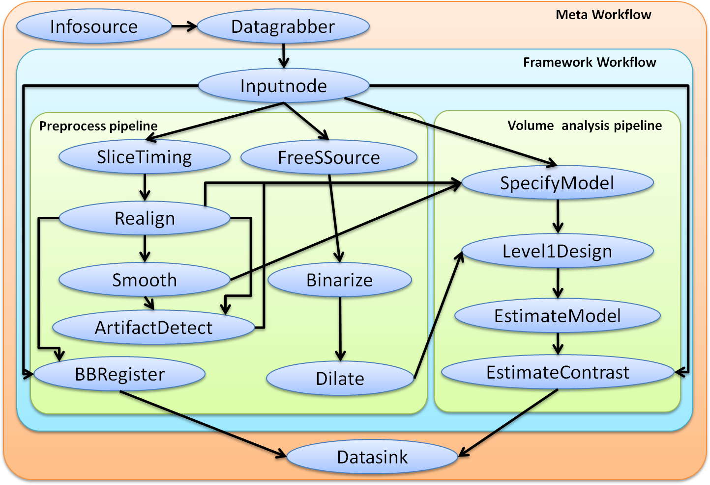
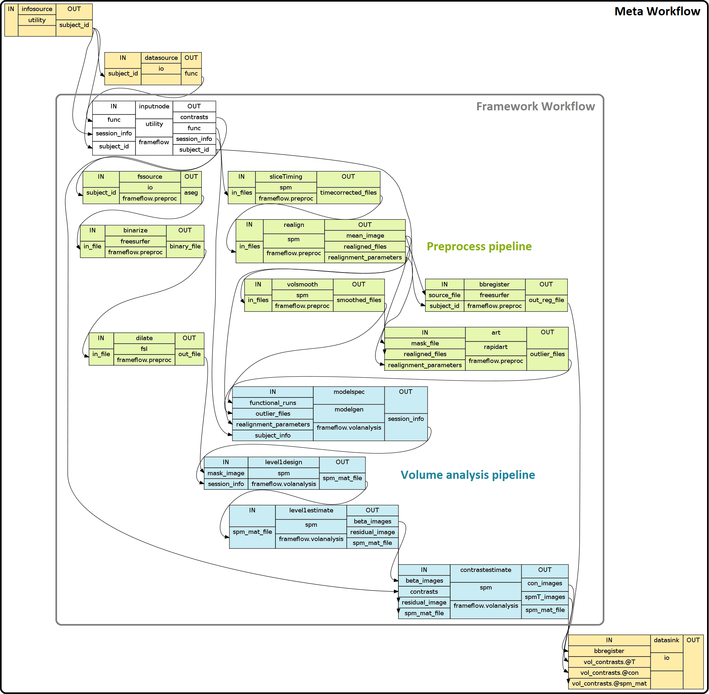

This is an example of a simple first level analysis pipeline. This pipeline takes the raw nifti data, does some preprocessing (e.g. realignment and smoothing) which is followed by the estimation of the concrete model.
Note
The normalization of the results to a common template will not be coverd by this chapter. A brief instruction on how to normalize your date with ANTS will be given in a latter chapter.
The best way to build your own pipeline is first to think about the workflow the data should go through. In this example we want to first run some preprocessing like SliceTiming, Realignment, ArtifactDetection, BBRegister and Smoothing. Additionally we also want to take the subject specific aseg file from the freesurfer folder, binarize it and dialte it to create a mask for the level1desing. All this will be accommodate in a preprocess pipeline. After that we want to estimate a concrete model by running first SpecifyModel, create a Level1Design, EstimateModel and finally EstimateContrast. This will be done in a volume analysis pipeline.
The preprocess and the volume analysis pipeline together with the inputnode, will create the basic framework workflow. And this framework workflow will be connected to the infosource, the datagrabber and the datasink by a higher workflow, I’d like to call meta workflow. Visualized this pipeline would look like the following:
The connections between the nodes will make more sense once we look at the inputs a given node needs. Some may also ask why we haven’t included the infosource, datagrabber and datasink nodes into the frameflow? The reason is that those nodes dependent highly on the paradigma specific parameters and will change for every model/experiment. That’s why we want to separat them from the framework workflow which will stay more or less the same for similar experiments. This does also give us the opportunity to just import this framework workflow into a new pipeline script.
Now that we have defined how the structure of our pipeline and the connections between them should be we can start with writing the pipeline script.
First we have to import all necessary modules.
import os # system functions
import nipype.algorithms.modelgen as model # model generation
import nipype.algorithms.rapidart as ra # artifact detection
import nipype.interfaces.freesurfer as fs # freesurfer
import nipype.interfaces.io as nio # i/o routines
import nipype.interfaces.spm as spm # spm
import nipype.interfaces.utility as util # utility
import nipype.pipeline.engine as pe # pypeline engine
import nipype.interfaces.base as base # base routines
import nipype.interfaces.fsl.maths as math #for dilating of the mask
I suggest to keep things that change often between versions, models, experiments like subject names, output folders and name of functional runs at one place so that they can be accessed more easily in case you want to change them.
#To better access the parent folder of the experiment
experiment_dir = os.getcwd()
#name of the subjects, functional fiels and output folders
subjects = ['subject1','subject2','subject3']
sessions = ['func1','func2']
nameOflevel1Out = 'results/level1_output'
nameOfWorkingdir = '/results/workingdir'
# Tell freesurfer what subjects directory to use
subjects_dir = experiment_dir + '/freesurfer_data'
fs.FSCommand.set_default_subjects_dir(subjects_dir)
Those specification mean that the name of the subjectfolders are “subject1”, “subject2” and “subject3” and that each of those folders contain a “func1.nii” and “func2.nii” file which represents the nifti files for the first and the second functional run. But the exact structure will be defined with the datagrabber node.
We first define the preprocess pipeline with a node for slicetiming, realingment, artifaction detection, bbregister and smoothing.
#Initiation of the preprocess workflow
preproc = pe.Workflow(name='preproc')
#Node: Slicetiming
sliceTiming = pe.Node(interface=spm.SliceTiming(), name="sliceTiming")
sliceTiming.inputs.num_slices = 28
sliceTiming.inputs.time_repetition = 2.0
sliceTiming.inputs.time_acquisition = 2. - 2./28
sliceTiming.inputs.slice_order = range(1,28+1) #for bottom up slicing
#sliceTiming.inputs.slice_order = range(28,0,-1) #for top down slicing
sliceTiming.inputs.ref_slice = 1
#Node: Realign - for motion correction and to register all images to the mean image
realign = pe.Node(interface=spm.Realign(), name="realign")
realign.inputs.register_to_mean = True
#Node: Artifact Detection - to determine which of the images in the functional
# series are outliers based on deviations in intensity or movement.
art = pe.Node(interface=ra.ArtifactDetect(), name="art")
art.inputs.norm_threshold = 0.5
art.inputs.zintensity_threshold = 3
art.inputs.mask_type = 'file'
art.inputs.parameter_source = 'SPM'
#Node: BBRegister - to coregister the mean functional image generated by realign
# to the subjects' surfaces.
bbregister = pe.Node(interface=fs.BBRegister(),name='bbregister')
bbregister.inputs.init = 'fsl'
bbregister.inputs.contrast_type = 't2'
#Node: Smooth - The volume smoothing option performs a standard SPM smoothing
volsmooth = pe.Node(interface=spm.Smooth(), name = "volsmooth")
volsmooth.inputs.fwhm = 6
#Node: FreeSurferSource - The get specifc files from the freesurfer folder
fssource = pe.Node(interface=nio.FreeSurferSource(),name='fssource')
fssource.inputs.subjects_dir = subjects_dir
#Node: Binarize - to binarize the aseg file for the dilation
binarize = pe.Node(interface=fs.Binarize(),name='binarize')
binarize.inputs.min = 0.5
binarize.inputs.out_type = 'nii'
#Node: DilateImage - to dilate the binarized aseg file and use it as a mask
dilate = pe.Node(interface=math.DilateImage(),name='dilate')
dilate.inputs.operation = 'max'
dilate.inputs.output_type = 'NIFTI'
#Connect up the preprocessing components
preproc.connect([(sliceTiming, realign,[('timecorrected_files', 'in_files')]),
(realign, bbregister,[('mean_image', 'source_file')]),
(realign, volsmooth, [('realigned_files', 'in_files')]),
(realign, art,[('realignment_parameters','realignment_parameters'),
('mean_image', 'mask_file'),
]),
(volsmooth,art,[('smoothed_files','realigned_files'),
]),
(fssource, binarize, [('aseg','in_file')]),
(binarize, dilate,[('binary_file','in_file')]),
(realign, art,[('realignment_parameters','realignment_parameters'),
('mean_image','mask_file'),
]),
])
Note
If you are wondering how we knew which parameters to specify and which connections to establish. It is simple: Define or connect all mandatory inputs for each node. All the other optional inputs can be defined as you please and more importantly as your model demands. For more informations go to Interfaces and Algorithms.
We than define the pipeline for the volume analysis with a node for model specification, first level design, parameter estimation and contrast estimation.
#Initiation of the volume analysis workflow
volanalysis = pe.Workflow(name='volanalysis')
#Node: SpecifyModel - Generate SPM-specific design information
modelspec = pe.Node(interface=model.SpecifySparseModel(), name= "modelspec")
modelspec.inputs.input_units = 'secs'
modelspec.inputs.time_repetition = 8.
modelspec.inputs.high_pass_filter_cutoff = 128
modelspec.inputs.model_hrf = True
modelspec.inputs.scale_regressors = True
modelspec.inputs.scan_onset = 4.
modelspec.inputs.stimuli_as_impulses = True
modelspec.inputs.time_acquisition = 2.
modelspec.inputs.use_temporal_deriv = False
modelspec.inputs.volumes_in_cluster = 1
#Node: Level1Design - Generate a first level SPM.mat file for analysis
level1design = pe.Node(interface=spm.Level1Design(), name= "level1design")
level1design.inputs.bases = {'hrf':{'derivs': [0,0]}}
#level1design.inputs.bases = {'fir':{'length':3, 'order' : 1}}
level1design.inputs.timing_units = 'secs'
level1design.inputs.interscan_interval = modelspec.inputs.time_repetition
#Node: EstimateModel - to determine the parameters of the model
level1estimate = pe.Node(interface=spm.EstimateModel(), name="level1estimate")
level1estimate.inputs.estimation_method = {'Classical' : 1}
#Node: EstimateContrast - to estimate the first level contrasts we define later
contrastestimate = pe.Node(interface = spm.EstimateContrast(), name="contrastestimate")
#Connect up the volume analysis components
volanalysis.connect([(modelspec,level1design,[('session_info','session_info')]),
(level1design,level1estimate,[('spm_mat_file','spm_mat_file')]),
(level1estimate,contrastestimate,[('spm_mat_file','spm_mat_file'),
('beta_images','beta_images'),
('residual_image',
'residual_image')]),
])
As we planed at the beginning we now want to integrate those two pipelines into a bigger framework workflow and want to add an inputnode that feeds these pipelines with parameters.
#Initiation of the framework workflow
frameflow = pe.Workflow(name='frameflow')
#Node: Inputnode - For this workflow the only necessary inputs are the functional
# images, a freesurfer subject id corresponding to recon-all processed data,
# the session information for the functional runs and the contrasts to be evaluated.
inputnode = pe.Node(interface=util.IdentityInterface(fields=['func','subject_id',
'session_info','contrasts']),
name='inputnode')
#Connect up the components into an integrated workflow.
frameflow.connect([(inputnode,preproc,[('func','sliceTiming.in_files'),
('subject_id','bbregister.subject_id'),
('subject_id','fssource.subject_id'),
]),
(inputnode, volanalysis,[('session_info','modelspec.subject_info'),
('contrasts','contrastestimate.contrasts'),
]),
(preproc, volanalysis, [('realign.realignment_parameters',
'modelspec.realignment_parameters'),
('volsmooth.smoothed_files',
'modelspec.functional_runs'),
('art.outlier_files',
'modelspec.outlier_files'),
('dilate.out_file','level1design.mask_image'),
])
])
We now have to create the infosource that defines the subjectlist, the datagrabber that grabbs the input and the datasink which defines where we want to store the important output at.
#Node: Infosource - we use IdentityInterface to creat our own node, to specify
# the list of subjects the pipeline should be executed on
infosource = pe.Node(interface=util.IdentityInterface(fields=['subject_id']),
name="infosource")
infosource.iterables = ('subject_id', subjects)
#Node: DataGrabber - To grab the input data
datasource = pe.Node(interface=nio.DataGrabber(infields=['subject_id'],
outfields=['func', 'struct']),
name = 'datasource')
#Define the main folder where the data is stored at and define the structure of it
datasource.inputs.base_directory = experiment_dir
datasource.inputs.template = 'data/%s/%s.nii'
info = dict(func=[['subject_id', sessions]],
struct=[['subject_id','struct']])
datasource.inputs.template_args = info
#Node: Datasink - Create a datasink node to store important outputs
datasink = pe.Node(interface=nio.DataSink(), name="datasink")
datasink.inputs.base_directory = experiment_dir
#Define where the datasink input should be stored at
datasink.inputs.container = nameOflevel1Out
We now set up the model specific components like contrasts, names of conditions, parametric modulators onset, duration of a trial etc.
#Names of the conditions
namesOfConditions = ['basic','condition1','condition2','condition3']
#Define different contrasts
cont1 = ('basic vs. conditions','T', namesOfConditions, [3,-1,-1,-1])
cont2 = ('all vs. condition1', 'T', namesOfConditions, [0,1,0,0])
cont3 = ('all vs. condition2', 'T', namesOfConditions, [0,0,1,0])
cont4 = ('all vs. condition3', 'T', namesOfConditions, [0,0,0,1])
cont5 = ('session1 vs session2','T', namesOfConditions, [1,1,1,1],[1,-1])
#store all contrasts into a list...
contrasts = [cont1, cont2, cont3, cont4, cont5]
#...and feed those contrasts to the inputnode filed 'contrasts'
frameflow.inputs.inputnode.contrasts = contrasts
#Function: Subjectinfo - This function returns subject-specific information about
# the experimental paradigm. This is used by the SpecifyModel function
# to create the information necessary to generate an SPM design matrix.
def subjectinfo(subject_id):
from nipype.interfaces.base import Bunch
namesOfConditions = ['basic','condition1','condition2','condition3']
#Onset Times in seconds
onsetTimes = [[1,10,42,49.6,66.1,74.1,97.6,113.6,122.2,130.2,137.2,153.7,169.2,
185.7,201.8,290.4,313.4,321.4,377.5,401.5,410,418.6,442.1,473.6],
[17.5,82.1,89.6,145.2,225.3,242.3,281.4,426.6],
[26,162.2,209.3,249.3,265.9,205.4,450.1,386],
[34,273.4,329.5,338.5,354,362,370,466.4]
]
#Define the parametric modulators
para_modu = [None,
Bunch(name=['target2','target3'], poly=[[1],[1]],
param = [[0,0,1,0,0,0,0,0],[0,0,0,0,1,0,0,1]]),
Bunch(name=['target2','target3'], poly=[[1],[1]],
param = [[0,0,0,1,1,1,0,0],[1,0,0,0,0,0,1,1]]),
Bunch(name=['target2','target3'], poly=[[1],[1]],
param = [[0,1,0,0,0,1,0,1],[0,0,0,0,1,0,1,0]]),
]
output = []
#We add the model specific parameters twice to the output list because we
#have 2 functional runs which were performed identical.
for r in range(2):
output.append(Bunch(conditions=namesOfConditions,
onsets=onsetTimes,
durations=[[2] for s in namesOfConditions],
amplitudes=None,
tmod=None,
pmod=para_modu,
regressor_names=None,
regressors=None))
return output #this output will later be returned to inputnode.session_info
After setting up all the nodes, parameters and subpipelines, we now want to creat the pipeline that contains everything. The one that gets executed at the end.
#Initiation of the metaflow
metaflow = pe.Workflow(name="metaflow")
#Define where the workingdir of the metaflow should be stored at
metaflow.base_dir = experiment_dir + nameOfWorkingdir
#Connect up all components
metaflow.connect([(infosource, datasource,[('subject_id', 'subject_id')]),
(datasource,frameflow,[('func','inputnode.func')]),
(infosource,frameflow,[('subject_id','inputnode.subject_id'),
(('subject_id', subjectinfo),
'inputnode.session_info'),
]),
(frameflow,datasink,[('preproc.bbregister.out_reg_file',
'bbregister'),
('volanalysis.contrastestimate.spm_mat_file',
'vol_contrasts.@spm_mat'),
('volanalysis.contrastestimate.spmT_images',
'vol_contrasts.@T'),
('volanalysis.contrastestimate.con_images',
'vol_contrasts.@con'),
])
])
Note
Some may wonder what the @spm_mat, @T and @con cause in the connection between the frameflow and the datasink. This specification means that all the spm_mat_file, spmT_images and con_images files all get saved into the same datasink folder with the name vol_contrasts. The .@id just specifies an identifier for the saving process.
Finally, after everything is set up correctly we can run the pipeline and let it draw the two graphs.
#Run the analysis pipeline and create the two graphs that visually represents the workflow.
metaflow.write_graph(graph2use='flat')
metaflow.run(plugin='MultiProc', plugin_args={'n_procs' : 2})
Here are now the basic and the detailed graph of this example of our meta pipeline. Both graphs were created with the graph2use parameter set to ‘flat’. The coloring was done additionally to underline the structure of the whole workflow.
The detailed graph shows how the different inputs and outputs of each individual nodes are connected to each other.
